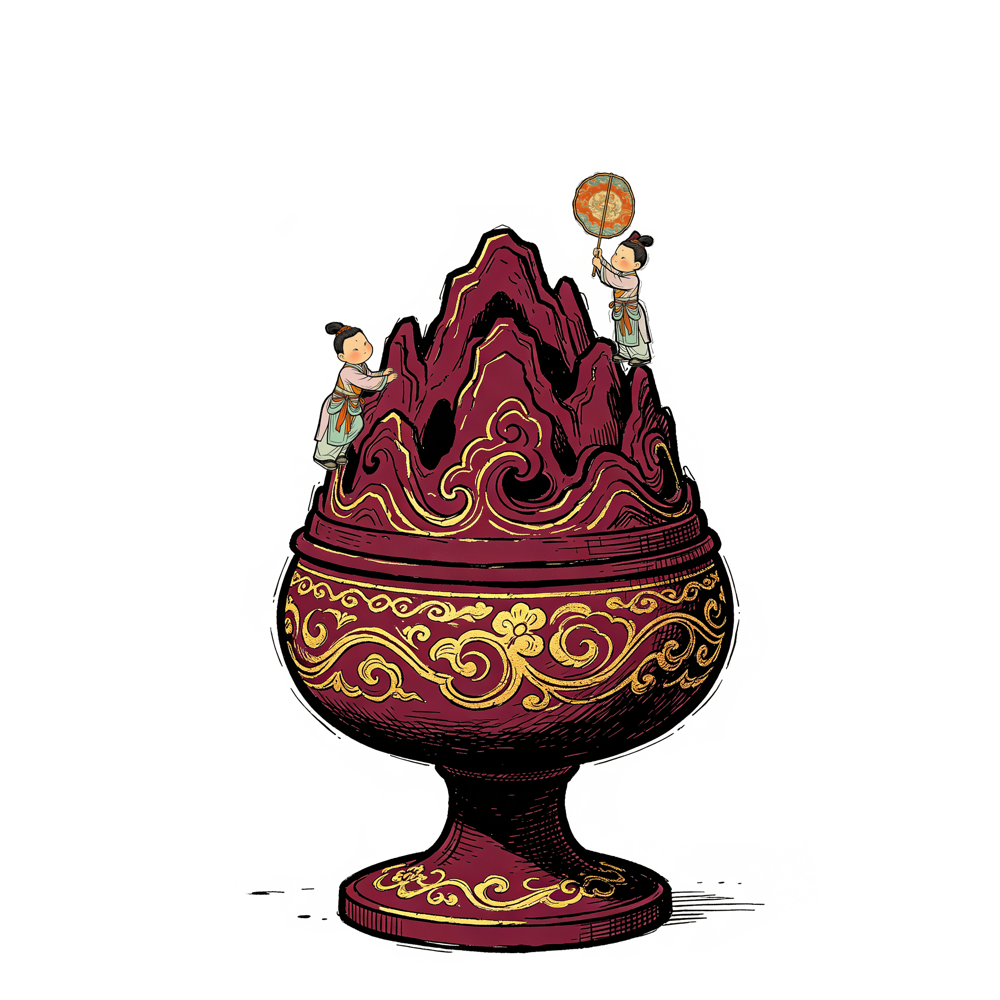
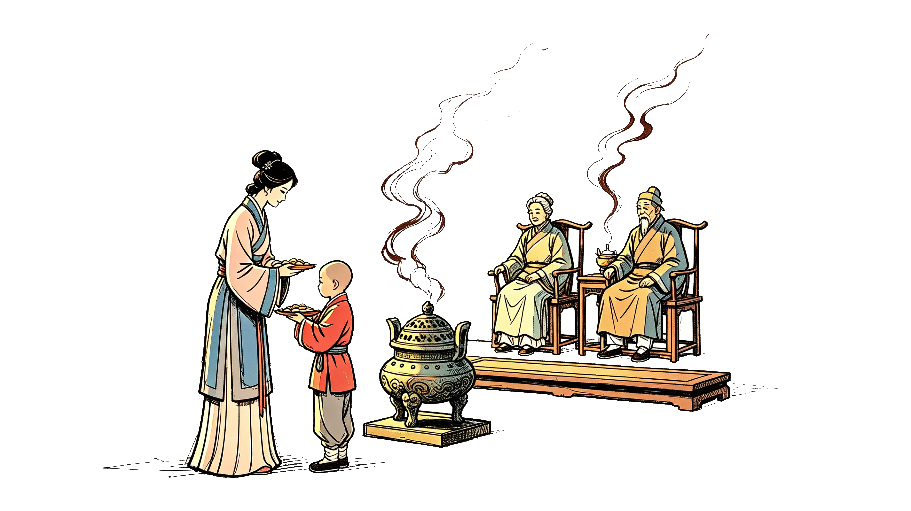
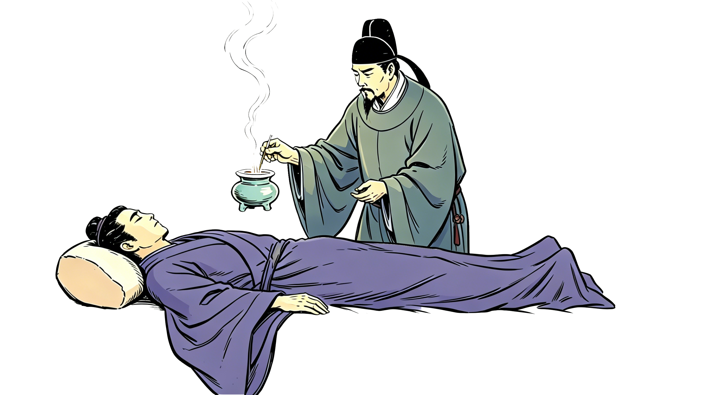
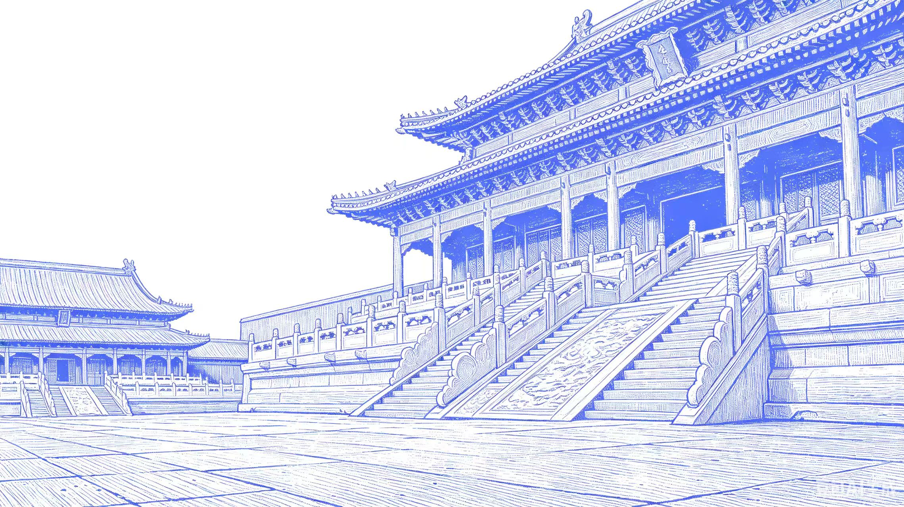

凝香寻古
— 溯香千年，藏古今和合清韵 —
一缕青烟，穿越千年。
从祭祀礼器到文人雅趣，从天然草木到匠心炮制，
香，承载着东方美学的灵韵与哲思。



投放火柴


投放沉香
历史追溯
— 香韵千年 · 十枚时光邮票 —
天然香料
— 天地灵韵 · 香材百科 —
制香工序
— 匠心凝练 · 七步成香 —
↓ 滚轮滑动探索制香工序 ↓
非遗传承
— 活态流变 · 千年香火 —
传承人
薪火相传 · 匠心守护
→相关项目
非遗名录 · 香脉延续
→传承签名
留名寄意 · 共续香缘
→
传承人
— 薪火相传 · 匠心守护 —
李时亮
国家级非遗传承人
传统香制作技艺（药香制作技艺）代表性传承人。自幼随家族学习药香制作，精通香药炮制与合香配伍，致力于传统药香的复原与创新，让千年药香在当代焕发新生。
相关项目
— 非遗名录 · 香脉延续 —
非遗级别分布
莞香制作技艺
岭南沉香核心非遗...
传承签名
— 留名寄意 · 共续香缘 —
✍️ 请在画布上写下你的名字
💡 输入姓名后点击下方按钮发送弹幕
← 从「制香工序」进入
🧪 制香操作交互
制香体验 · 交互空间
这里将呈现制香过程的交互式模拟，
用户可参与选料、炮制、配伍等环节。
（待完善交互逻辑）
← 从「非遗传承」进入
🏮 闽南 · 永春香
永春香，源自福建永春，以"篾香"著称，是国家级非物质文化遗产。
其制作技艺融合了中原香文化与闽南地方特色，以竹篾为骨，香泥为肉，经沾、搓、浸、晒等工序而成。
🌿 特色：篾香 · 传统沾香法 · 百年传承
← 从「非遗传承」进入
🌿 岭南 · 莞香
莞香，产于广东东莞，以"女儿香"闻名，是中国传统名香之一。
莞香树（白木香树）结香需经"开香门"等特殊技艺，香韵清雅绵长，自古为宫廷贡品。
🌿 特色：白木香 · 开香门 · 清雅之韵
← 从「非遗传承」进入
📿 江南 · 苏香
苏香，源自苏州，以"和香"技艺著称，融合了江南文人的审美意趣。
苏香讲究香方配伍与香品造型，以香丸、香饼、香篆等形式呈现，香气幽雅细腻，富有书卷气。
🌿 特色：和香 · 香篆 · 文人雅趣